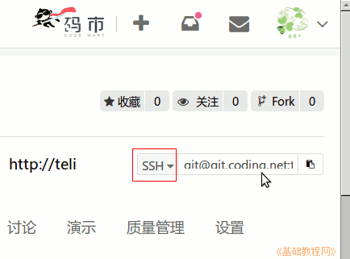
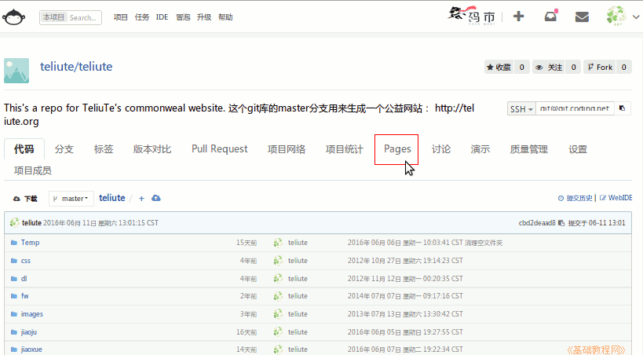
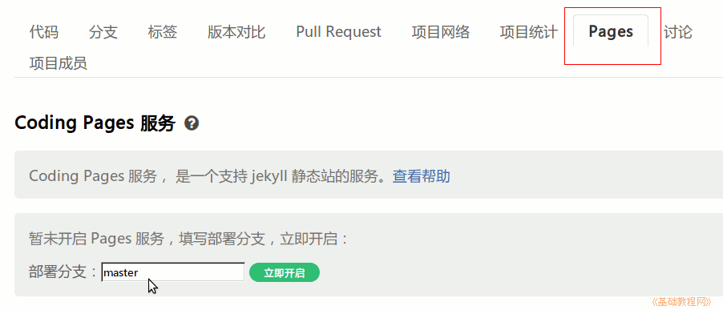
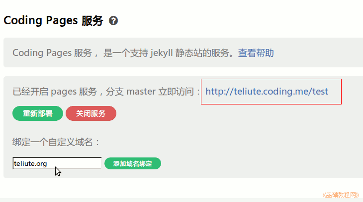
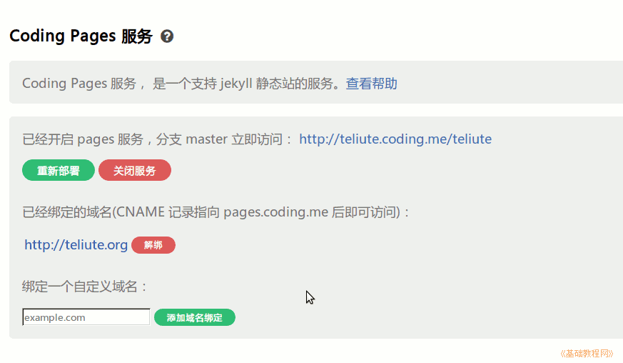
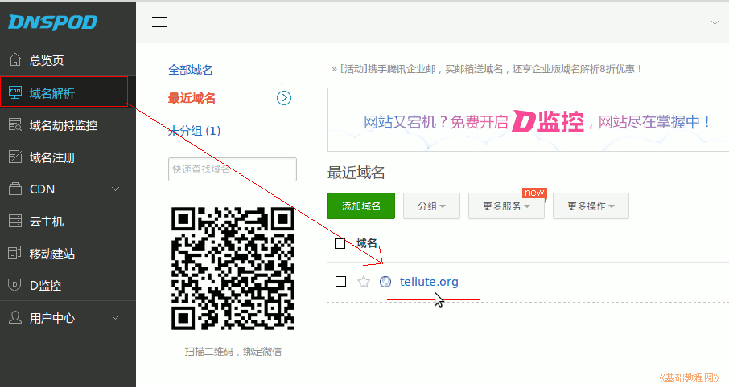
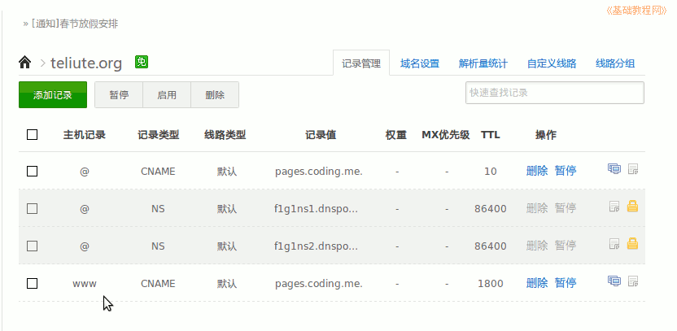

coding 操作指南
作者：TeliuTe 来源：基础教程网
十、上传文件、pages生成网站 返回目录 下一课coding中上传文件跟github相同，可以参看前面的第4课、第5课；
1、上传文件、pages生成网站
1）coding的本地库，可以跟github共用同一个，也可以重新创建一个；
2）coding中，创建别名的时候，跟github的要区别开，另取一个即可；
git remote add ct git@git.coding.net:teliute/teliute.git
3）coding上的库地址，可以点击相应的项目，在右边选择SSH，复制旁边文本框里的内容；

4）要想生成网站，进入项目后，点中间的Pages标签；

5）在下边的文本框输入主分支名 master 然后点旁边绿色的“立即开启”按钮，右边的网址就可以访问了；

6）如果自己有域名，可以把库绑定到自己的域名上，继续在下面的文本框输入自己的域名，点“添加域名绑定”；

7）绑定之后，还要去域名服务商那儿，将DNS解析指向coding这儿；

8）以DNSPOD为例，登录后进入控制台，点击左侧栏的“域名解析”，右边出来自己的域名；

9）点进去设置主机记录www，类型CNAME，指向pages.coding.me，等上一段时间（>15分钟）就可以用域名访问了，例如：http://teliute.org

本节学习了上传文件、pages生成网站的基础知识，如果你成功地完成了练习，请继续学习下一课内容；
本教程由86团学校TeliuTe制作|著作权所有
基础教程网：http://teliute.org/
美丽的校园……
转载和引用本站内容，请保留作者和本站链接。